6e editie — Techniek
UitgelichtBlijf Dissident!
Techniek in de eenentwintigste eeuw

The Magnificent 7
In gesprek met de kersverse Tweede Kamerfractie
Forumland
Horlogemaker Ritchie
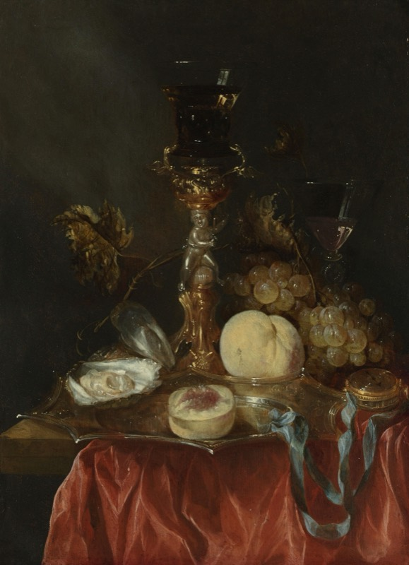
De Noord-Zuidlijn
Leven op noodstroom in Zuid-Afrika
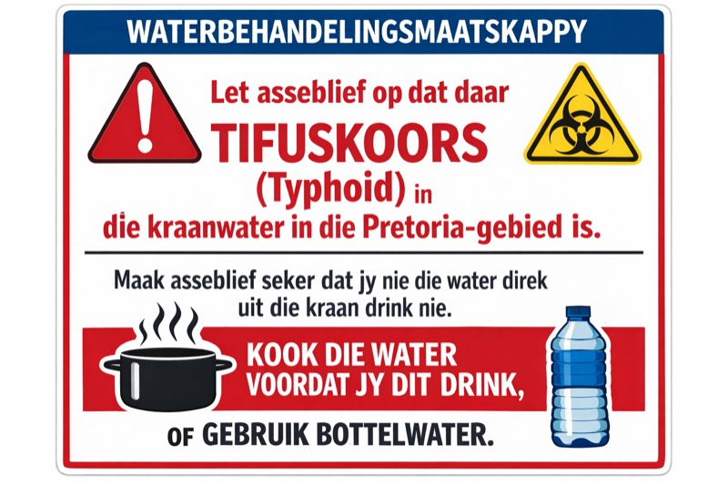
In Stijl
Garderobe Essentials
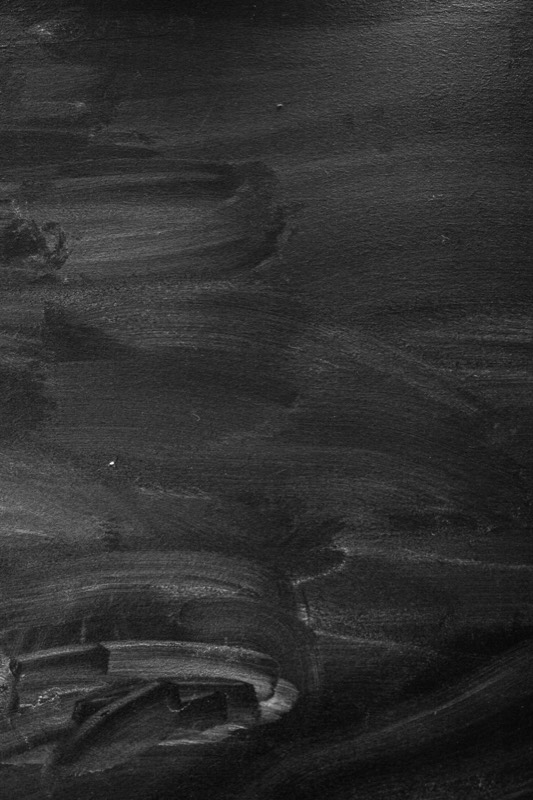
Interview
In gesprek met Martin Sellner
Boeken
Bibliotheek van Babel
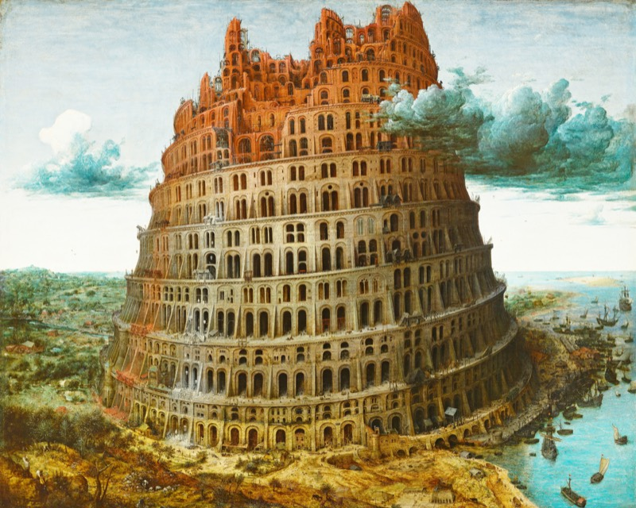
Techniek
Restomods
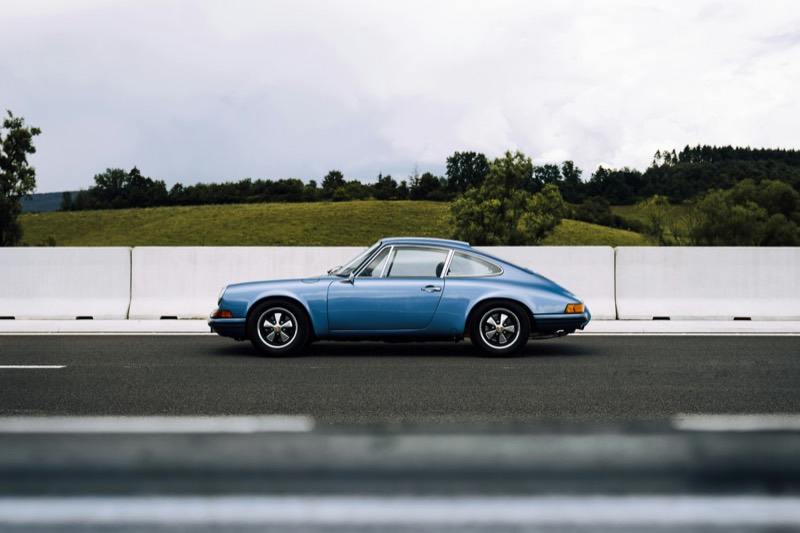
Geschiedenis
Historische Keerpunten
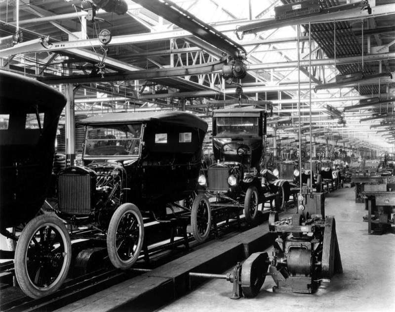
Filosofie
Technologie is voortbrengen
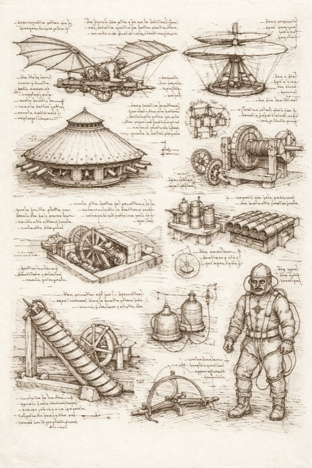
Psychologie
Psychologie
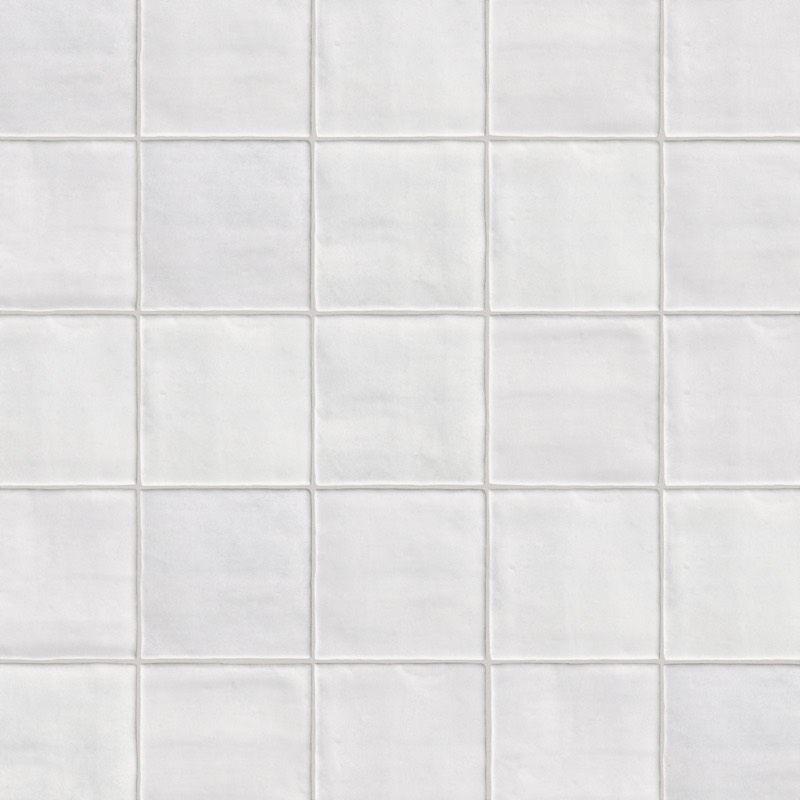
Essay
Post-Futurisme
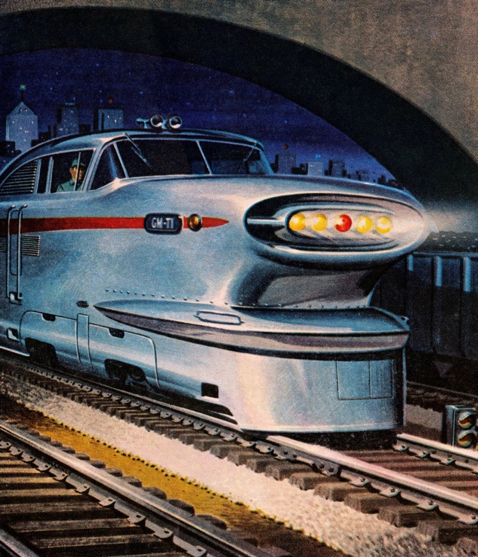
Essay
Anti-Industrieel Extremisme
Essay
Rijkswaterstaat
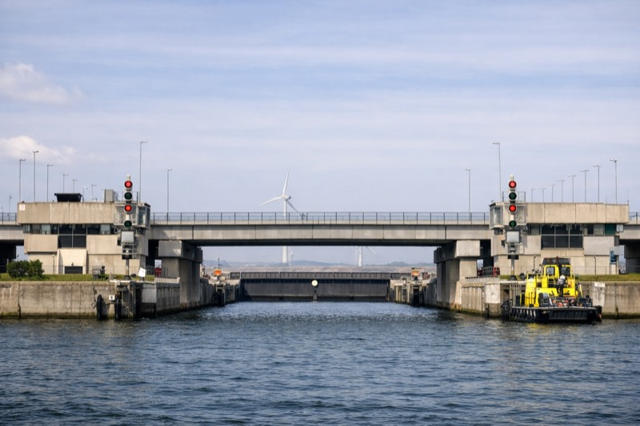
Economie
Ontstijg de inflatie!
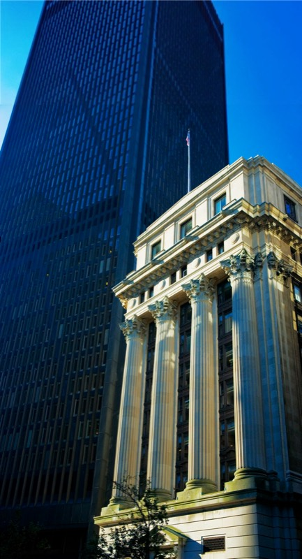
Interview
In gesprek met Mark Koster
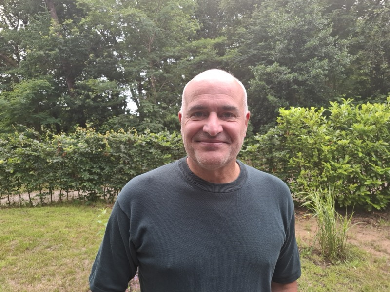
Architectuur
De Dom van Keulen
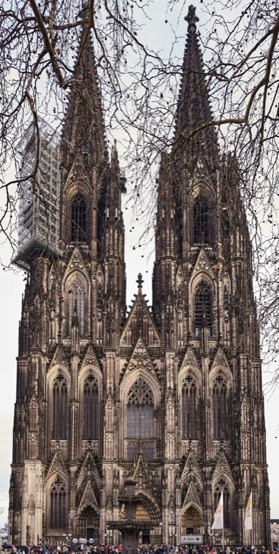
Reisverslag
Een klassieke grand tour door Italië
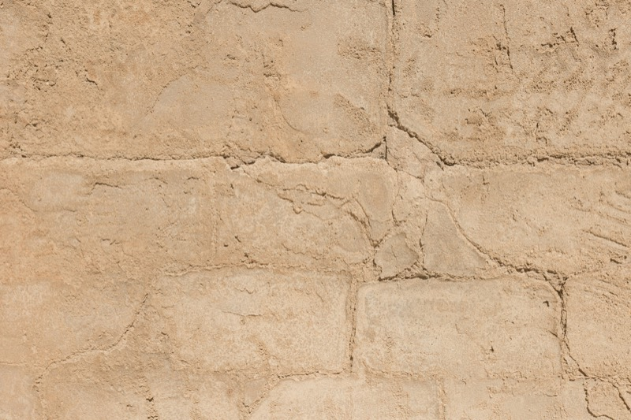
Rubriek
Naaien met Nijman
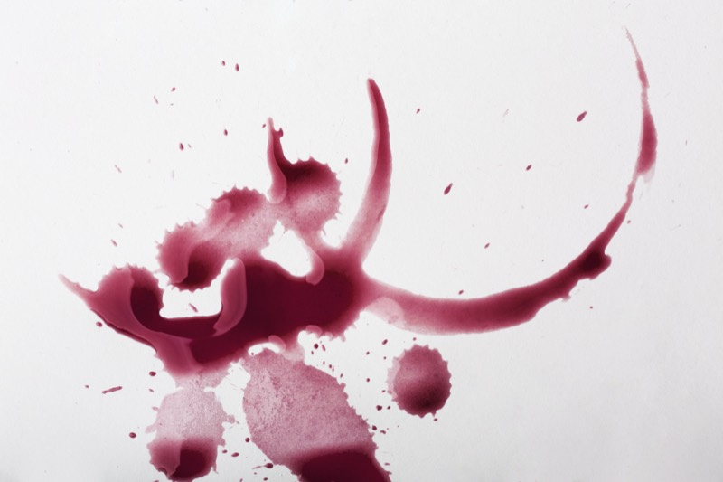
Nawoord